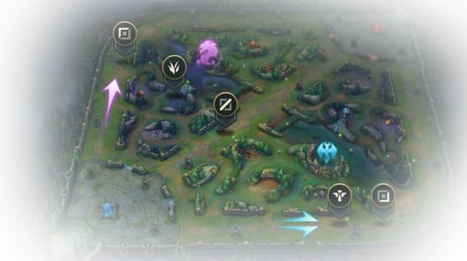
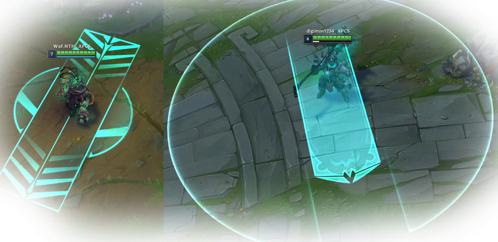
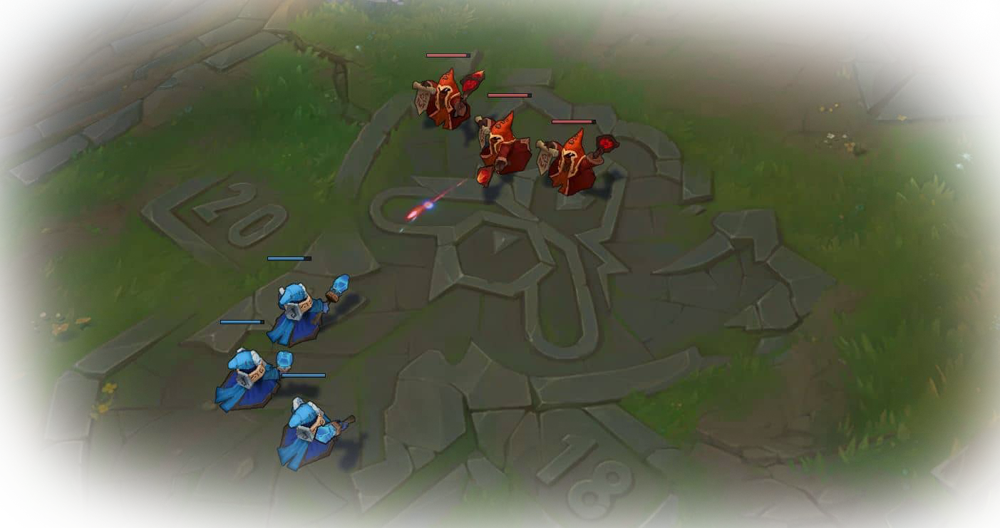
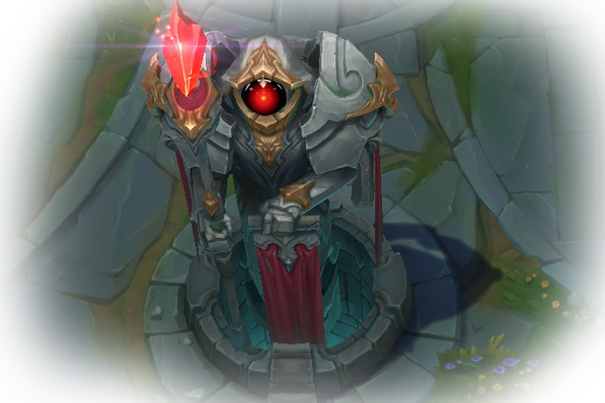
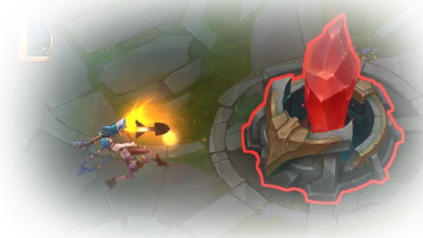
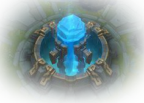
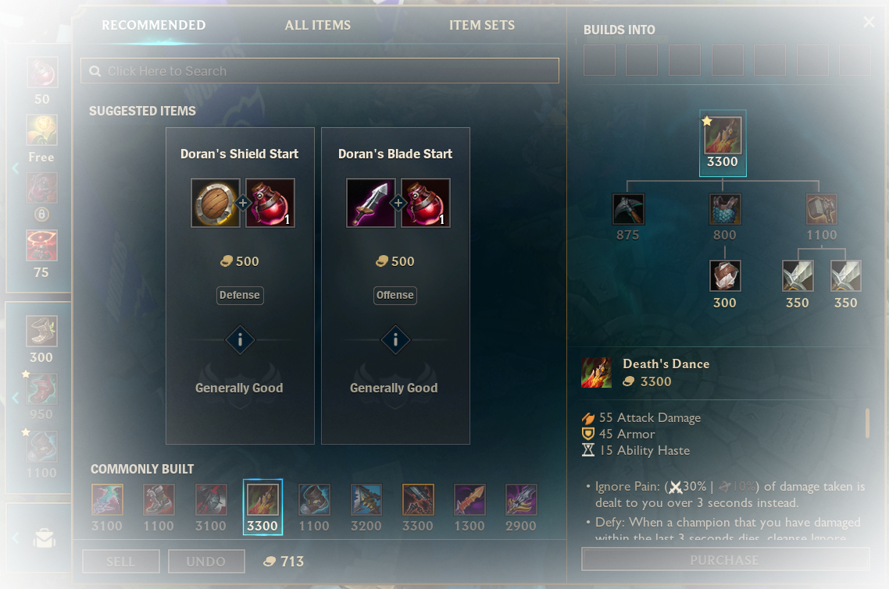
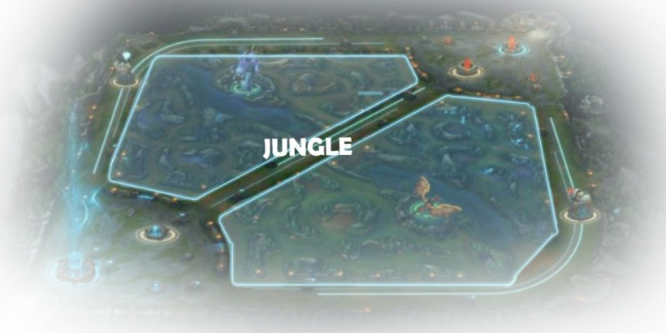

ยินดีต้อนรับเข้าสู่
ข้อมูลเกมส์
มีอะไรอีกมากมายให้เรียนรู้เกี่ยวกับ League of Legends
ดังนั้นเราจะเริ่มต้นด้วยสิ่งสำคัญก่อน
เลน
ในตัวเกมนั้นจะมีถนนที่เป็นเส้นทางหลักอยู่ทั้งหมด 3 ทางด้วยกัน
ซึ่งถนนแต่ละเส้นก็จะมานำพาคุณไปยังฐานฝ่ายศัตรูเหมือนกัน
ถนนนี้พวกเราจะเรียกว่า “เลน” เพื่อที่จะชนะฝ่ายตรงข้าม
คุณจำเป็นต้องต้องจัดการทำลายสิ่งก่อสร้างของศัตรูในเลนของคุณ
เพื่อที่จะปูทางไปยังใจกลางของฐานฝ่ายศัตรู
และทำลายป้อมกลางที่เปรียบเสมือนหัวใจของศัตรูหรือที่เรียกว่า
เน็กซัส(Nexus) นั้นเอง
การควบคุมแชมเปี้ยนของคุณ

ด้วยพื้นฐานของการควบคุมตัวละครจะคล้ายกับเกมแนว RTS
เพื่อสั่งแชมเปี้ยนเคลื่อนที่ คุณเพียงคลิกขวา
พวกเขาก็จะเคลื่อนที่ไปยังตำแหน่งที่คุณต้องการ
เพื่อสั่งโจมตีศัตรู ให้ใช้การคลิกขวาที่เป้าหมาย
ในการร่ายเวทย์ต่างๆกดคลิกซ้ายที่ ไอค่อน
หรือใช้ปุ่มลัด (ปุ่ม Q W E R)
แล้วหลังจากนั้นค่อยกดคลิกลงที่เป้าหมาย
**หมายเหตุ**
การควบคุมต่างๆสามารถปรับแต่งได้ตามที่คุณต้องการในการตั้งค่า
มินเนี่ยน

มินเนี่ยน หรือ Minion คือเหล่าทหารตัวน้อย
ที่จะถูกควบคุมด้วยระบบคอมพิวเตอร์
ซึ่งพวกเขาจะเกิดที่เน็กซัสของฝ่ายเรา
และเดินขบวนออกไปตามเลนต่างๆตรงไปยังฐานของศัตรู
และจะคอยโจมตีศัตรูทุกตัวที่ผ่านหน้าของมัน
การฆ่ามินเนี่ยนนั้นจะช่วยให้คุณได้รับทอง
สำหรับให้แชมเปี้ยนของเรานำไปใช้ซื้อไอเทมต่างๆเพื่อเพิ่มความสามารถ
มินเนี่ยนจะไปตามทางแล้ววิ่งเข้าหากันทำการโมตีใส่กันเอง
แต่ถ้าหากในบริเวณนั้นมีแชมเปี้ยนอยู่คนเดียว
มินเนี่ยนก็จะวิ่งเข้าหาแล้วทำการโจมตีใส่ทันที
และถ้าคุณไปโจมตีใส่แชมเปี้ยนฝั่งศัตรู
มินเนี่ยนก็จะพุ่งเป้ามาหาคุณเช่นกัน
อย่าไว้วางใจกองทัพตัวน้อยเหล่านี้
โดยเฉพาะในช่วงต้นเกม
ป้อมปราการ

ป้อมปราการเป็นสิ่งก่อสร้างที่ทรงประสิทธิภาพและมีพลังโจมตีรุนแรง
ซึ่งคอยปกป้องเลนของเราจากการดันเลนของศัตรู
ซึ่งมันจะโจมตีแบบระยะไกลด้วยการยิงศรเวทมนตร์เข้ามาใส่ศัตรู
โดยปกติแล้วป้อมปราการจะเล็งเป้าไปยังพวกมินเนี่ยนก่อน
แต่ถ้าเราไปโจมตีตัวแชมเปี้ยนของศัตรูในระยะของป้อมปราการ
มันพุ่งเป้ามาโจมตีเราแทนทันที
หรือถ้าเรายืนอยู่ในระยะของป้อมปราการเพียงคนเดียวก็จะโดนโจมตีเช่นกัน
ดังนั้นการต่อสู้ในบริเวณป้อมปราการของศัตรู
คุณจะต้องระมัดระวังมากเป็นพิเศษ
อินฮิบบิเตอร์

อินฮิบบิเตอร์ หรือ inhibitor
เป็นสิ่งก่อสร้างสำคัญที่อยู่ในบริเวณฐานใหญ่ของเรา
โดยมันจะถูกวางไว้ตามเลนต่างๆทั้ง 3 เลนทั้งสองฝั่ง
การทำลายอินฮิบบิเตอร์ของฝ่ายตรงข้ามนั้น
จะช่วยในการสร้างซุปเปอร์ มินเนี่ยนให้กับเราตามเลนที่เราทำลาย
ซึ่งซุปเปอร์มินเนี่ยนจะมีความแข็งแกร่งมากกว่ามินเนี่ยนปกติมาก
พวกมันสามารถทำลายสิ่งก่อสร้างได้อย่างรวดเร็ว
โดยพวกมันจะมุ่งหน้าทำลายล้างทุกๆอย่าง
จนไปถึงเน็คซัสของฝ่ายตรงข้าม
อินฮิบิเตอร์นั้นจะมีเวลาเกิดใหม่คือทุก 5 นาที
ถ้าสามารถทำลาย อินฮิบิเตอร์ ครบทุกเลนจะเป็นการสร้าง
ซุปเปอร์ มินเนี่ยนเพิ่มขึ้นมาเป็น 2 ตัวต่อ 1 เลนด้วย
เน็คซัส

ใจกลางของฐานแต่ละฝ่าย จะมีเน็คซัส(Nexus)อยู่
โดยจะถูกคุ้มครองด้วยป้อมปราการ 2 ป้อม
โดยเน็คซัสนั้นจะมีหน้าที่ในการผลิตมินเนี่ยนออกมาเรื่อยๆ
เมื่อฝ่ายใดฝ่ายหนึ่งสามารถทำลายเน็คซัสของฝั่งตรงข้ามได้
ก็จะถือว่าเกมนั้นจบลงแล้วผู้ทำลายได้ก็จะเป็นฝ่ายชนะ
ไอเทม

ในเกม League of Legends เมื่อแชมเปี้ยนของคุณสามารถฆ่าศัตรู
ไม่ว่าจะเป็น มินเนี่ยน แชมเปี้ยน หรือทำลายสิ่งก่อสร้างก็ตาม
พวกเขาได้ก็จะได้รับทองเป็นรางวัล
และยังมีวิธีอื่นๆอีกเช่น การใช้รูน หรือไอเทมบางอย่าง
ก็จะสามารถทำให้ได้ทองเพิ่มขึ้นมาได้เหมือนกัน
คุณสามารถใช้ทองซื้อไอเทมอันทรงพลังได้จากร้านขายไอเทม
ใกล้ฐานเติมเลือดของคุณด้วย การคลิกที่ร้านโดยตรง
หรือจะกดปุ่มข้างจุดที่โชว์ค่าทองในหน้าจอก็ได้เช่นกัน
พื้นที่ป่า

รอบๆของทั้ง 3 เลนก็จะเป็นพื้นที่ป่า
ซึ่งในป่านี้ก็จะมีสัตว์ป่าอาศัยอยู่มากมาย
โดยสัตว์เหล่านี้จะไม่โจมตีฐานหรือสิ่งก่อสร้างใดๆ
แต่เราสามารถฆ่าสัตว์เหล่าเพื่อเอาทอง
และบัฟเสริมความสามารถได้
ผู้เล่นสามารถเล่นในตำแหน่งที่ถูกเรียกว่า Jungler
ซึ่งจะใช้บริเวณป่าเหล่านี้เป็นที่สำหรับหาทองไปซื้อของให้ตัวเอง
ซึ่งพวกเขาสามารถไปช่วยเหลือเพื่อนร่วมทีมในการสังหารได้ทุกเลน
โดยเฉพาะเมื่อเพื่อนต้องการความช่วยเหลือ